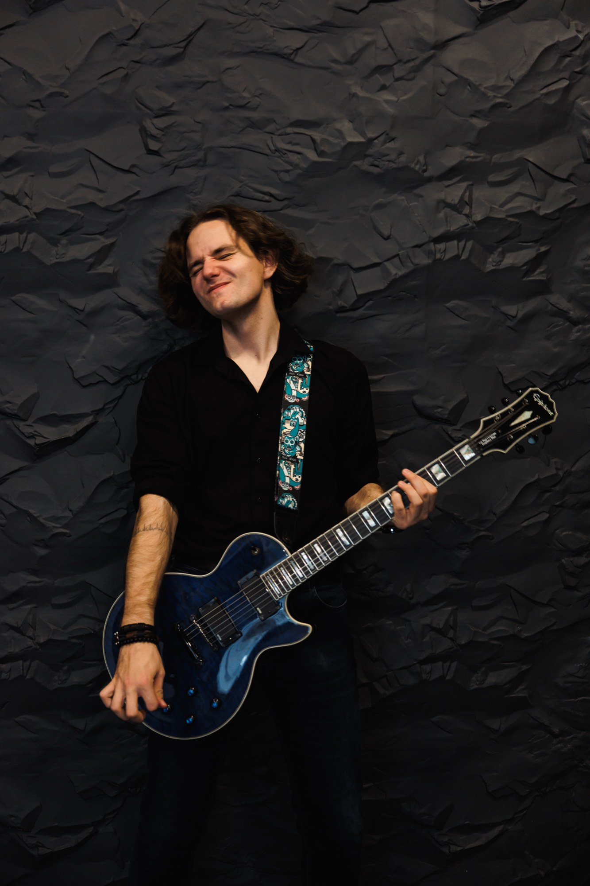

Студия и туры
Виталий
Громов
Сессионный гитарист, автор текстов и музыки в группе Мера Хаоса. Готов к записи партий в студии и выступлению на гастролях и концертах: ритм, соло. Подстраиваюсь под артиста, аранжировку и срок.

01
О себе
Беру студийную работу от одной партии до полного гитарного слоя. Работаю по демо, референсу или нотам и собираю тембр под трек: чистый звук, перегруз, эмбиент.
На туре держу концертную партию, репетиции и плотный график. Быстро разбираю чужой материал и сохраняю форму от площадки к площадке.
- Инструмент Электрогитара (6 струнка в стандартном строе, 6 струнка для более низких строев, 7 струнка), акустическая гитара, бас-гитара (5 струн)
- Оборудование Гитарый процессор BOSS GT-1000
02
Видео
Акустика
Концерт
04
Написать
Для сессии или тура: даты, город, референс и формат задачи. В Telegram отвечаю быстрее, на почту удобно прислать бриф.